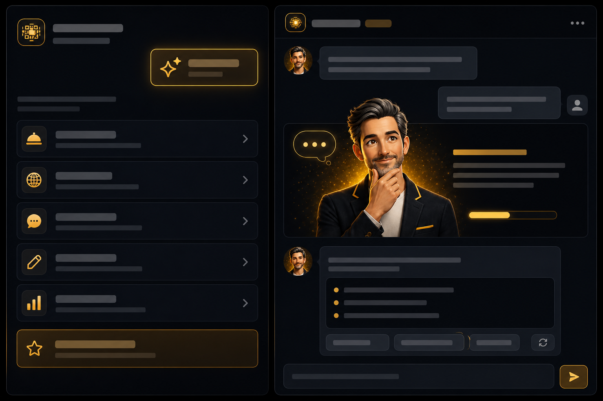

Standard
Une base sérieuse pour afficher un menu digital propre et multilingue.
TapCarta vous permet de démarrer simplement avec un QR durable, puis d’ajouter les fonctions qui comptent vraiment : menu digital, langues, réservation, commande et visibilité.
Chaque formule a son rôle. Le tableau sert à comparer clairement les prix et les fonctions incluses. Le détail utile vient juste après.
| Fonction | Light0 €/ mois | Standard30 €/ mois HTVA | Plus45 €/ mois HTVA | MaxBientôtPrix en préparation |
|---|---|---|---|---|
| QR durable conservé | ✓ | ✓ | ✓ | ✓ |
| Nom, localisation, appel/contact | ✓ | ✓ | ✓ | ✓ |
| Menu digital complet | × | ✓ | ✓ | ✓ |
| Détection automatique de la langue du client | × | ✓ | ✓ | ✓ |
| Accès de gestion restaurant | × | ✓ | ✓ | ✓ |
| Site web standard lié au restaurant | × | ✓ | ✓ | ✓ |
| Référencement TapCarta et web | Base | Normal | Avancé | Poussé par l’assistant |
| Adresse web avec meilleur référencement internet | × | × | × | ✓ |
| Réservation | × | × | ✓ | ✓ |
| Commande / précommande indicative | × | × | ✓ | ✓ |
| Assistant personnel du restaurateur | × | × | × | ✓ |
Standard donne une base propre : menu digital, langues et gestion. Plus ajoute les éléments qui transforment TapCarta en outil commercial complet : réservation, commande indicative, site web standard et meilleure visibilité.
Une base sérieuse pour afficher un menu digital propre et multilingue.
La version la plus équilibrée pour un restaurant qui veut réellement exploiter son QR au quotidien.
Max arrive prochainement pour accompagner le restaurateur dans les tâches qui prennent du temps : mieux traduire la carte, améliorer les descriptions, préparer des idées de contenu, analyser les performances et renforcer la visibilité du restaurant.

Cette zone est prévue pour intégrer facilement la future vidéo démo, sans casser le parcours de choix du pack.
TapCarta est pensé pour évoluer sans changer votre QR. Vous pouvez commencer proprement, puis activer davantage de fonctions selon vos besoins et selon votre contrat.